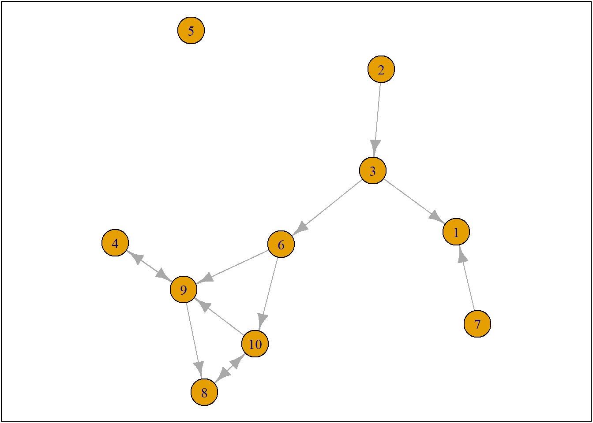
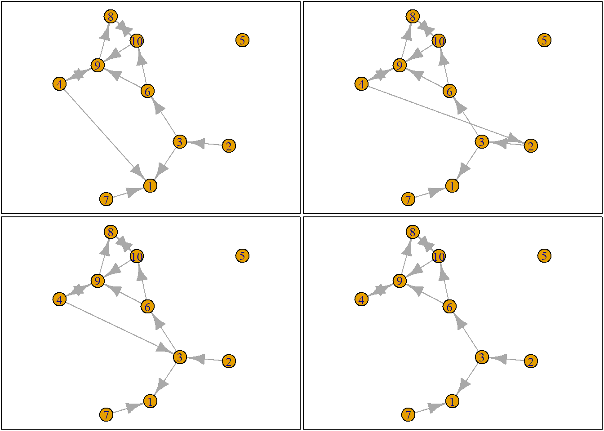
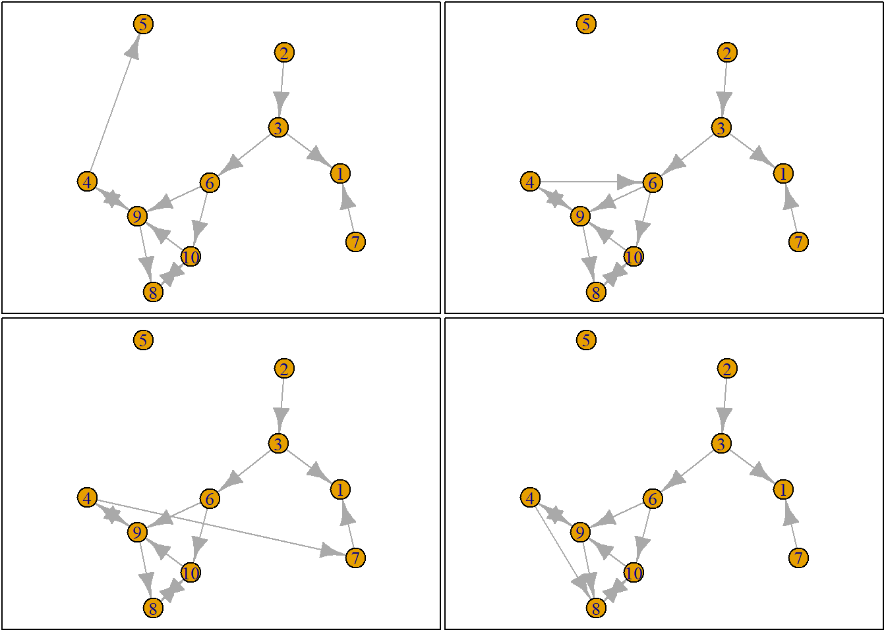
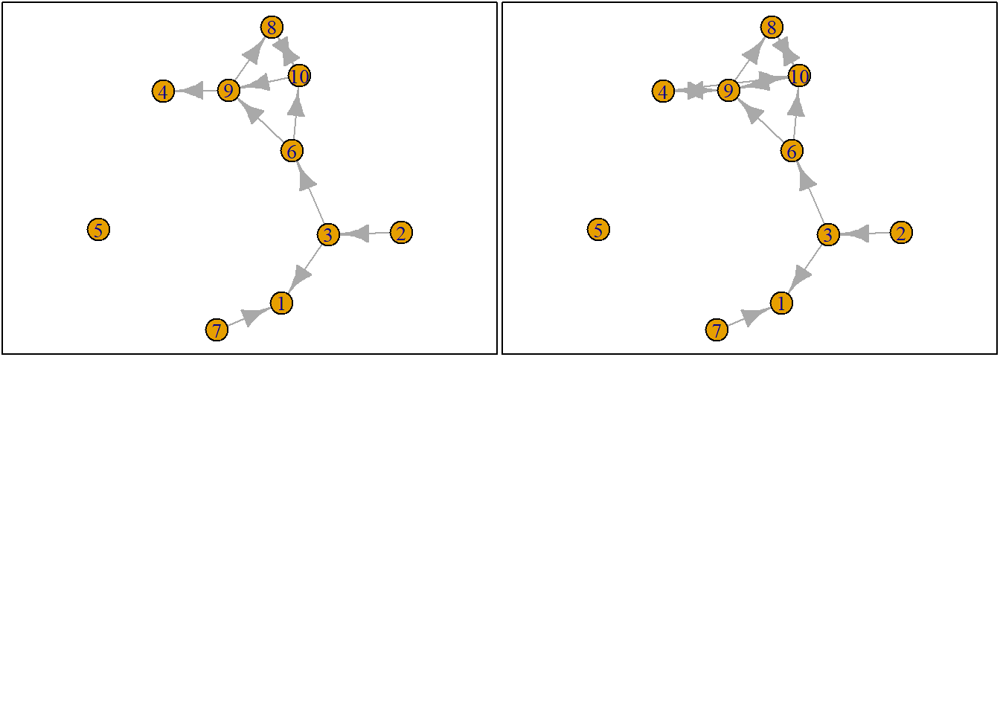
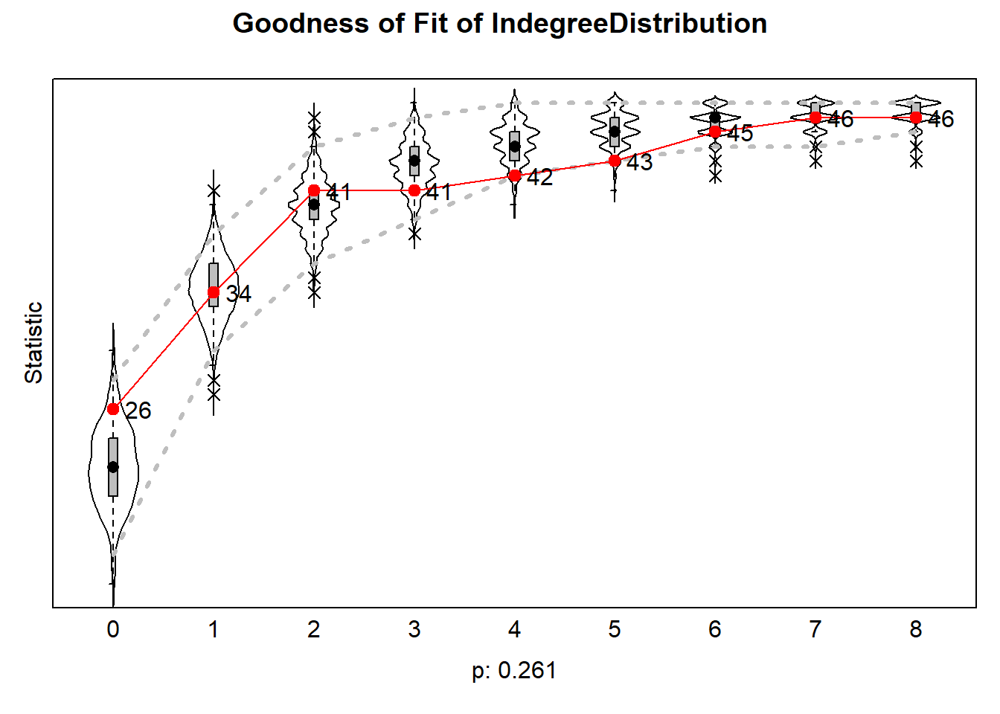

My descriptive, macro, question was: “Does positive peer influence affect youths’ political participation?” After our discussion in class, I realise that this isn’t really a descriptive question, as it is about a relationship between two variables. So I will adjust my research question to be actually descriptive, at least I hope so. Also, with an eye on the available data, I have decided to slightly adjust my topic. Rather than looking at political participation, I will look at civic engagement. My adjusted research question is: Are students who are connected to each other more similar with regards to civic engagement, than students who are not connected to each other?
It may be interesting here to look at both strong and weak ties, as in the data there is a measure for ‘friends’ and ‘people you study with.’ However, I don’t know whether that will be too complicated for this course yet.
My explanatory, micro, question was: “Do peers become more similar to each other with regards to the degree of political participation?” I think I will keep this question relatively similar to what it was, except, of course, adjusting the topic to fit with my new macro question. I am still interested in seeing whether potential similarity can be explained through selection effects or through influence effects. So my ‘new’ research question is: Do students become more similar to each other with regards to civic engagement, when they are connected in a network?
Here again, it could be really interesting to look at the difference between strong and weak ties, as you could expect there to be a bigger effect of strong ties, if there is an influence effect.
I think I will use the MRCS data, as this is a very extensive dataset, which covers the topic that I am interested in.
Civic engagement
For civic engagement they asked questions about both beliefs and behaviour. About beliefs they asked:
SXceng01: I feel responsible for my local community.
SXceng02: I believe I should make a difference in my local community.
SXceng03: I am committed to serve in my local community.
SXceng04: I know how to give back to my local community
About behaviour they asked:
SXceng05: I am involved in structured volunteer position(s) in my local community.
SXceng06: When working with others, I make positive changes in my local community.
SXceng07: I help members of my local community.
SXceng08: I stay informed of events in my local community.
SXceng09: I participate in discussions that raise issues of social responsibility.
SXceng10: I contribute to charitable organizations within the local community
I am most interested in the actual behaviour, however, I don’t know whether this behaviour is salient enough in the data to see any patterns.
Strong/ weak ties
To map the social network within the learning communities, the researchers asked multiple questions. Firstly, for what I will consider weak ties, the respondents were asked to write down who they tend to study with.
Who do you study with in your MLC? Please write their names in the box below. If you do not know their last names, please include as much as you can remember. (If you can’t think of anyone, please skip this question)
And for the measure of strong ties, I will be relying on the following question:
Which students in your MLC do you hang around with and talk to the most? Please write their names in the box below. Again, if you do not know their last names, please include as much as you can remember. (If you can’t think of anyone, please skip this question)
Set up
rm(list = ls())
fpackage.check <- function(packages) {
lapply(packages, FUN = function(x) {
if (!require(x, character.only = TRUE)) {
install.packages(x, dependencies = TRUE)
library(x, character.only = TRUE)
}
})
}
fsave <- function(x, file = NULL, location = "./data/processed/") {
ifelse(!dir.exists("data"), dir.create("data"), FALSE)
ifelse(!dir.exists("data/processed"), dir.create("data/processed"), FALSE)
if (is.null(file))
file = deparse(substitute(x))
datename <- substr(gsub("[:-]", "", Sys.time()), 1, 8)
totalname <- paste(location, datename, file, ".rda", sep = "")
save(x, file = totalname) #need to fix if file is reloaded as input name, not as x.
}
#Saves the data automatically with a date stamp
fload <- function(filename) {
load(filename)
get(ls()[ls() != "filename"])
}
fshowdf <- function(x, ...) {
knitr::kable(x, digits = 2, "html", ...) %>%
kableExtra::kable_styling(bootstrap_options = c("striped", "hover")) %>%
kableExtra::scroll_box(width = "100%", height = "300px")
}
colorize <- function(x, color) {
sprintf("<span style='color: %s;'>%s</span>", color, x)
}packages = c("RSiena", "devtools", "igraph")
fpackage.check(packages)## [[1]]
## NULL
##
## [[2]]
## NULL
##
## [[3]]
## NULL# devtools::install_github('JochemTolsma/RsienaTwoStep', build_vignettes=TRUE)
packages = c("RsienaTwoStep")
fpackage.check(packages)## [[1]]
## NULLts_net1## [,1] [,2] [,3] [,4] [,5] [,6] [,7] [,8] [,9] [,10]
## [1,] 0 0 0 0 0 0 0 0 0 0
## [2,] 0 0 1 0 0 0 0 0 0 0
## [3,] 1 0 0 0 0 1 0 0 0 0
## [4,] 0 0 0 0 0 0 0 0 1 0
## [5,] 0 0 0 0 0 0 0 0 0 0
## [6,] 0 0 0 0 0 0 0 0 1 1
## [7,] 1 0 0 0 0 0 0 0 0 0
## [8,] 0 0 0 0 0 0 0 0 0 1
## [9,] 0 0 0 1 0 0 0 1 0 0
## [10,] 0 0 0 0 0 0 0 1 1 0net1g <- graph_from_adjacency_matrix(ts_net1, mode = "directed")
coords <- layout_(net1g, nicely()) #let us keep the layout
par(mar = c(0.1, 0.1, 0.1, 0.1))
{
plot.igraph(net1g, layout = coords)
graphics::box()
}
Ego-sampling
set.seed(24553253)
ego <- ts_select(net = ts_net1)
ego## [1] 4options <- ts_alternatives_ministep(net = ts_net1, ego = ego)
# options
plots <- lapply(options, graph_from_adjacency_matrix, mode = "directed")
par(mar = c(0, 0, 0, 0) + 0.1)
par(mfrow = c(2, 2))
fplot <- function(x) {
plot.igraph(x, layout = coords, margin = 0)
graphics::box()
}
lapply(plots, fplot)

## [[1]]
## NULL
##
## [[2]]
## NULL
##
## [[3]]
## NULL
##
## [[4]]
## NULL
##
## [[5]]
## NULL
##
## [[6]]
## NULL
##
## [[7]]
## NULL
##
## [[8]]
## NULL
##
## [[9]]
## NULL
##
## [[10]]
## NULL
Network statistics
ts_degree(net = options[[1]], ego = ego)## [1] 2sapply(options, ts_degree, ego = ego)## [1] 2 2 2 1 2 2 2 2 0 2sapply(options, ts_recip, ego = ego)## [1] 1 1 1 1 1 1 1 1 0 1First line: Shows how many outdegrees actor 4 (= ego) has in the first simulated network (after ministep 1) Second line: Shows how many outdegrees actor 4 (= ego) has in all simulated networks (after ministep 1) Third line: Shows how many reciprocated ties actor 4 (= ego) has in all simulated networks (after ministep 1)
option <- 4
ts_degree(options[[option]], ego = ego) * -1 + ts_recip(options[[option]], ego = ego) * 1.5## [1] 0.5For option 4, actor 4 has 1 tie, which get a value (parameter) of -1, but he also gets one reciprocated tie, which we value 1.5 –> actor 4 in option 4 gets a value of .5. This is just to show, you would not fill out the values for -1 and 1.5. This is what the model gives you.
eval <- sapply(options, FUN = ts_eval, ego = ego, statistics = list(ts_degree, ts_recip), parameters = c(-1,
1.5))
eval## [1] -0.5 -0.5 -0.5 0.5 -0.5 -0.5 -0.5 -0.5 0.0 -0.5print("network with maximum evaluation score:")## [1] "network with maximum evaluation score:"which.max(eval)## [1] 4This prints all options, in which the parameters are taken into account. It shows which one has the best value for this specific actor. It shows the preference for each network. To determine which network the agent actually chooses, you need to weigh them –> you need to recalculate all values to end up between 0 and 1, all of which chances have to sum to 1 For every network, a chance of choosing this network is calculated using McFaddens choice function
choice <- sample(1:length(eval), size = 1, prob = exp(eval)/sum(exp(eval)))
print("choice:")## [1] "choice:"choice## [1] 10# print('network:') options[[choice]]Because every choice is dependent on the previous choices made, there is interdependency in the network
Set up
df <- fload("./data/20230621df_complete.rda")
publications <- fload("./data/20230621list_publications_jt.rda")
fpackage.check <- function(packages) {
lapply(packages, FUN = function(x) {
if (!require(x, character.only = TRUE)) {
install.packages(x, dependencies = TRUE)
library(x, character.only = TRUE)
}
})
}
fsave <- function(x, file = NULL, location = "./data/processed/") {
ifelse(!dir.exists("data"), dir.create("data"), FALSE)
ifelse(!dir.exists("data/processed"), dir.create("data/processed"), FALSE)
if (is.null(file))
file = deparse(substitute(x))
datename <- substr(gsub("[:-]", "", Sys.time()), 1, 8)
totalname <- paste(location, datename, file, ".rda", sep = "")
save(x, file = totalname) #need to fix if file is reloaded as input name, not as x.
}
fload <- function(filename) {
load(filename)
get(ls()[ls() != "filename"])
}
fshowdf <- function(x, ...) {
knitr::kable(x, digits = 2, "html", ...) %>%
kableExtra::kable_styling(bootstrap_options = c("striped", "hover")) %>%
kableExtra::scroll_box(width = "100%", height = "300px")
}
# this is the most important one. We created it in the previous script
f_pubnets <- function(df_scholars = df, list_publications = publications, discip = "sociology", affiliation = "RU",
waves = list(wave1 = c(2018, 2019, 2020), wave2 = c(2021, 2022, 2023))) {
publications <- list_publications %>%
bind_rows() %>%
distinct(title, .keep_all = TRUE)
df_scholars %>%
filter(affil1 == affiliation | affil2 == affiliation) %>%
filter(discipline == discip) -> df_sel
networklist <- list()
for (wave in 1:length(waves)) {
networklist[[wave]] <- matrix(0, nrow = nrow(df_sel), ncol = nrow(df_sel))
}
publicationlist <- list()
for (wave in 1:length(waves)) {
publicationlist[[wave]] <- publications %>%
filter(gs_id %in% df_sel$gs_id) %>%
filter(year %in% waves[[wave]]) %>%
select(author) %>%
lapply(str_split, pattern = ",")
}
publicationlist2 <- list()
for (wave in 1:length(waves)) {
publicationlist2[[wave]] <- publicationlist[[wave]]$author %>%
# lowercase
lapply(tolower) %>%
# Removing diacritics
lapply(stri_trans_general, id = "latin-ascii") %>%
# only last name
lapply(word, start = -1, sep = " ") %>%
# only last last name
lapply(word, start = -1, sep = "-")
}
for (wave in 1:length(waves)) {
# let us remove all publications with only one author
remove <- which(sapply(publicationlist2[[wave]], FUN = function(x) length(x) == 1) == TRUE)
publicationlist2[[wave]] <- publicationlist2[[wave]][-remove]
}
for (wave in 1:length(waves)) {
pubs <- publicationlist2[[wave]]
for (ego in 1:nrow(df_sel)) {
# which ego?
lastname_ego <- df_sel$lastname[ego]
# for all publications
for (pub in 1:length(pubs)) {
# only continue if ego is author of pub
if (lastname_ego %in% pubs[[pub]]) {
aut_pot <- which.max(pubs[[pub]] %in% lastname_ego)
# only continue if ego is first author of pub
if (aut_pot == 1) {
# check all alters/co-authors
for (alter in 1:nrow(df_sel)) {
# which alter
lastname_alter <- df_sel$lastname[alter]
if (lastname_alter %in% pubs[[pub]]) {
networklist[[wave]][ego, alter] <- networklist[[wave]][ego, alter] + 1
}
}
}
}
}
}
}
return(list(df = df_sel, network = networklist))
}packages = c("RSiena", "tidyverse", "stringdist", "stringi")
fpackage.check(packages)## Loading required package: stringdist##
## Attaching package: 'stringdist'## The following object is masked from 'package:tidyr':
##
## extract## Loading required package: stringi## [[1]]
## NULL
##
## [[2]]
## NULL
##
## [[3]]
## NULL
##
## [[4]]
## NULLoutput <- f_pubnets()
df_soc <- output[[1]]
df_network <- output[[2]]Start here for working with RSiena ### Step 1 df_soc –> dataset on actor level df_network –> dataset on network level (the dependent variable/ Y)
view(df_soc)
view(df_network)The data has multiple waves, seperate those
wave1 <- df_network[[1]]
wave2 <- df_network[[2]]
# let us put the diagonal to zero
diag(wave1) <- 0
diag(wave2) <- 0
# we want a binary tie (not a weighted tie)
wave1[wave1 > 1] <- 1
wave2[wave2 > 1] <- 1
# put the nets in an array
net_soc_array <- array(data = c(wave1, wave2), dim = c(dim(wave1), 2))
# dependent
net <- sienaDependent(net_soc_array)RSiena can only handle numeric data, so recode gender (= the independent variable)
# gender (= independent variable)
gender <- as.numeric(df_soc$gender == "female")
gender <- coCovar(gender)mydata <- sienaDataCreate(net, gender)myeff <- getEffects(mydata)
# effectsDocumentation(myeff)Effects documentation tells you what network statistics you can calculate
Get a quick overview of the dataframe (automatically saves it into a document into a new map of the journal)
ifelse(!dir.exists("results"), dir.create("results"), FALSE)## [1] FALSEprint01Report(mydata, modelname = "./results/soc_init")You want to safe the effects that you want to consider (based on theory) Hint:make every effect a seperate line, so you can easily change it
myeff <- includeEffects(myeff, isolateNet, inPop, outAct, inAct, transTrip)## effectNumber effectName shortName include fix test initialValue parm
## 1 21 transitive triplets transTrip TRUE FALSE FALSE 0 0
## 2 78 indegree - popularity inPop TRUE FALSE FALSE 0 0
## 3 115 outdegree - activity outAct TRUE FALSE FALSE 0 0
## 4 124 indegree - activity(#) inAct TRUE FALSE FALSE 0 1
## 5 158 network-isolate isolateNet TRUE FALSE FALSE 0 0myeff <- includeEffects(myeff, sameX, egoX, altX, interaction1 = "gender")## effectNumber effectName shortName include fix test initialValue parm
## 1 262 gender alter altX TRUE FALSE FALSE 0 0
## 2 277 gender ego egoX TRUE FALSE FALSE 0 0
## 3 333 same gender sameX TRUE FALSE FALSE 0 0Interaction1 means that you estimate for the variable afterwards (in this case gender)
You can decide to use different algorithms, or multiple cores or whatever, but here just the basic
myAlgorithm <- sienaAlgorithmCreate(projname = "soc_init")## If you use this algorithm object, siena07 will create/use an output file soc_init.txt .(ans <- siena07(myAlgorithm, data = mydata, effects = myeff))## Estimates, standard errors and convergence t-ratios
##
## Estimate Standard Convergence
## Error t-ratio
##
## Rate parameters:
## 0 Rate parameter 4.0653 ( 0.9926 )
##
## Other parameters:
## 1. eval outdegree (density) -2.4515 ( 0.8525 ) 0.0126
## 2. eval reciprocity 2.3296 ( 0.5236 ) 0.0107
## 3. eval transitive triplets 0.7739 ( 0.3815 ) 0.0197
## 4. eval indegree - popularity 0.2213 ( 0.0569 ) 0.0480
## 5. eval outdegree - activity 0.0149 ( 0.1156 ) 0.0013
## 6. eval indegree - activity(1) -0.4127 ( 0.2737 ) 0.0142
## 7. eval network-isolate 2.4594 ( 1.3591 ) -0.0199
## 8. eval gender alter -0.3929 ( 0.3068 ) 0.0055
## 9. eval gender ego 0.1514 ( 0.3339 ) -0.0326
## 10. eval same gender 0.1551 ( 0.2789 ) 0.0134
##
## Overall maximum convergence ratio: 0.1034
##
##
## Total of 2526 iteration steps.# (the outer parentheses lead to printing the obtained result on the screen) if necessary, estimate
# further
(ans <- siena07(myAlgorithm, data = mydata, effects = myeff, prevAns = ans, returnDeps = TRUE))## Estimates, standard errors and convergence t-ratios
##
## Estimate Standard Convergence
## Error t-ratio
##
## Rate parameters:
## 0 Rate parameter 4.0477 ( 1.0285 )
##
## Other parameters:
## 1. eval outdegree (density) -2.4908 ( 0.7320 ) 0.0185
## 2. eval reciprocity 2.3379 ( 0.6639 ) 0.0014
## 3. eval transitive triplets 0.7831 ( 0.4002 ) 0.0479
## 4. eval indegree - popularity 0.2213 ( 0.0622 ) 0.0305
## 5. eval outdegree - activity 0.0190 ( 0.1023 ) 0.0186
## 6. eval indegree - activity(1) -0.4056 ( 0.2802 ) 0.0725
## 7. eval network-isolate 2.4407 ( 1.1787 ) 0.0292
## 8. eval gender alter -0.4092 ( 0.3090 ) -0.0387
## 9. eval gender ego 0.1628 ( 0.3198 ) -0.0192
## 10. eval same gender 0.1606 ( 0.3087 ) 0.0372
##
## Overall maximum convergence ratio: 0.1348
##
##
## Total of 2690 iteration steps.What does this mean: Rate parameter: On average every agent has made 4 ministeps Outdegree (density): Very strongly negative Network isolate effect: There are probably a lot of people who do not have any ties –> you get a positive score if there are neither indegrees nor outdegrees Eval gender alter: Men send fewer ties Eval gender ego: Women send more ties Eval same gender: Positive, so people prefer to work together with people of the same gender
You want to know whether your simulated network matches your observed network. You make the simulated network match on certain criteria, but a network has more characteristics (e.g. degree distribution). This is interesting to see whether it matches as well.
# see here: ?'sienaGOF-auxiliary'
# The geodesic distribution is not available from within RSiena, and therefore is copied from the
# help page of sienaGOF-auxiliary:
# GeodesicDistribution calculates the distribution of non-directed geodesic distances; see
# ?sna::geodist The default for \code{levls} reflects the usual phenomenon that geodesic distances
# larger than 5 do not differ appreciably with respect to interpretation. Note that the levels of
# the result are named; these names are used in the \code{plot} method.
GeodesicDistribution <- function(i, data, sims, period, groupName, varName, levls = c(1:5, Inf), cumulative = TRUE,
...) {
x <- networkExtraction(i, data, sims, period, groupName, varName)
require(sna)
a <- sna::geodist(symmetrize(x))$gdist
if (cumulative) {
gdi <- sapply(levls, function(i) {
sum(a <= i)
})
} else {
gdi <- sapply(levls, function(i) {
sum(a == i)
})
}
names(gdi) <- as.character(levls)
gdi
}
# The following function is taken from the help page for sienaTest
testall <- function(ans) {
for (i in which(ans$test)) {
sct <- score.Test(ans, i)
cat(ans$requestedEffects$effectName[i], "\n")
print(sct)
}
invisible(score.Test(ans))
}gofi0 <- sienaGOF(ans, IndegreeDistribution, verbose = FALSE, join = TRUE, varName = "net")
gofo0 <- sienaGOF(ans, OutdegreeDistribution, verbose = FALSE, join = TRUE, varName = "net")
gof0.gd <- sienaGOF(ans, GeodesicDistribution, cumulative = FALSE, verbose = FALSE, join = TRUE, varName = "net")
gof0.tc <- sienaGOF(ans, TriadCensus, verbose = FALSE, join = TRUE, varName = "net")plot(gofi0)
This plot shows the observerd value (in red) and the distribution of simulated networks (the boxplots). On the x-axis it shows the amount of agents in a network with X amount of ties Example: For 0 ties, the model estimates fewer people having 0 ties, than actually observed P value: Measures whether overall the deviation is significant (in this case, not significant)Can be used to figure out how often a certain statistic/ effect has played a role in a decision from an agent Would an agent have made a different choice, if the statistic would have been 0 Shows how important a specific statistic is, relative to other ties
Using RSiena as an ABM/ making the micro macro link
Getting started
rm(list = ls())
fpackage.check <- function(packages) {
lapply(packages, FUN = function(x) {
if (!require(x, character.only = TRUE)) {
install.packages(x, dependencies = TRUE)
library(x, character.only = TRUE)
}
})
}
fsave <- function(x, file = NULL, location = "./data/processed/") {
ifelse(!dir.exists("data"), dir.create("data"), FALSE)
ifelse(!dir.exists("data/processed"), dir.create("data/processed"), FALSE)
if (is.null(file))
file = deparse(substitute(x))
datename <- substr(gsub("[:-]", "", Sys.time()), 1, 8)
totalname <- paste(location, datename, file, ".rda", sep = "")
save(x, file = totalname) #need to fix if file is reloaded as input name, not as x.
}
fload <- function(filename) {
load(filename)
get(ls()[ls() != "filename"])
}
fshowdf <- function(x, ...) {
knitr::kable(x, digits = 2, "html", ...) %>%
kableExtra::kable_styling(bootstrap_options = c("striped", "hover")) %>%
kableExtra::scroll_box(width = "100%", height = "300px")
}
# this is the most important one. We created it in the previous script
f_pubnets <- function(df_scholars = df, list_publications = publications, discip = "sociology", affiliation = "RU",
waves = list(wave1 = c(2018, 2019, 2020), wave2 = c(2021, 2022, 2023))) {
publications <- list_publications %>%
bind_rows() %>%
distinct(title, .keep_all = TRUE)
df_scholars %>%
filter(affil1 == affiliation | affil2 == affiliation) %>%
filter(discipline == discip) -> df_sel
networklist <- list()
for (wave in 1:length(waves)) {
networklist[[wave]] <- matrix(0, nrow = nrow(df_sel), ncol = nrow(df_sel))
}
publicationlist <- list()
for (wave in 1:length(waves)) {
publicationlist[[wave]] <- publications %>%
filter(gs_id %in% df_sel$gs_id) %>%
filter(year %in% waves[[wave]]) %>%
select(author) %>%
lapply(str_split, pattern = ",")
}
publicationlist2 <- list()
for (wave in 1:length(waves)) {
publicationlist2[[wave]] <- publicationlist[[wave]]$author %>%
# lowercase
lapply(tolower) %>%
# Removing diacritics
lapply(stri_trans_general, id = "latin-ascii") %>%
# only last name
lapply(word, start = -1, sep = " ") %>%
# only last last name
lapply(word, start = -1, sep = "-")
}
for (wave in 1:length(waves)) {
# let us remove all publications with only one author
remove <- which(sapply(publicationlist2[[wave]], FUN = function(x) length(x) == 1) == TRUE)
publicationlist2[[wave]] <- publicationlist2[[wave]][-remove]
}
for (wave in 1:length(waves)) {
pubs <- publicationlist2[[wave]]
for (ego in 1:nrow(df_sel)) {
# which ego?
lastname_ego <- df_sel$lastname[ego]
# for all publications
for (pub in 1:length(pubs)) {
# only continue if ego is author of pub
if (lastname_ego %in% pubs[[pub]]) {
aut_pot <- which.max(pubs[[pub]] %in% lastname_ego)
# only continue if ego is first author of pub
if (aut_pot == 1) {
# check all alters/co-authors
for (alter in 1:nrow(df_sel)) {
# which alter
lastname_alter <- df_sel$lastname[alter]
if (lastname_alter %in% pubs[[pub]]) {
networklist[[wave]][ego, alter] <- networklist[[wave]][ego, alter] + 1
}
}
}
}
}
}
}
return(list(df = df_sel, network = networklist))
}Install/ load packages
packages = c("RSiena", "tidyverse", "stringdist", "stringi")
fpackage.check(packages)## [[1]]
## NULL
##
## [[2]]
## NULL
##
## [[3]]
## NULL
##
## [[4]]
## NULLLoad in data
packages = c("stringdist", "stringi", "tidyverse")
fpackage.check(packages)## [[1]]
## NULL
##
## [[2]]
## NULL
##
## [[3]]
## NULLload("./data/IndividualCharacteristics.RData")
load("./data/NetworkCharacteristics.RData")Create a matrix, that can be used within RSiena. I set all values 9 to NA, as these respondents have not filled out the survey
# view(studying[[1]])
studying_df_t1 <- as.data.frame(studying[[1]][1])
class(studying_df_t1)## [1] "data.frame"# view(studying_df_t1)
weak_netw_t1 <- data.matrix(studying_df_t1)
weak_netw_t1[weak_netw_t1==9]<-NA
class(weak_netw_t1)## [1] "matrix" "array"# view(weak_netw_t1)
studying_df_t2 <- as.data.frame(studying[[1]][2])
class(studying_df_t2)## [1] "data.frame"# view(studying_df_t2)
weak_netw_t2 <- data.matrix(studying_df_t2)
weak_netw_t2[weak_netw_t2==9]<-NA
class(weak_netw_t2)## [1] "matrix" "array"# view(weak_netw_t2)# view(hanging[[1]])
hanging_df_t1 <- as.data.frame(hanging[[1]][1])
class(hanging_df_t1)## [1] "data.frame"# view(hanging_df_t1)
strong_netw_t1 <- data.matrix(hanging_df_t1)
strong_netw_t1[strong_netw_t1==9]<-NA
class(strong_netw_t1)## [1] "matrix" "array"# view(strong_netw_t1)
hanging_df_t2 <- as.data.frame(hanging[[1]][2])
class(hanging_df_t2)## [1] "data.frame"# view(hanging_df_t2)
strong_netw_t2 <- data.matrix(hanging_df_t2)
strong_netw_t2[strong_netw_t2==9]<-NA
class(strong_netw_t2)## [1] "matrix" "array"# view(strong_netw_t2)gender_df <- as.data.frame(gender)
ethnicity_df <- as.data.frame(ethnic)
ind_mat <- data.matrix(cbind(gender_df, ethnicity_df))
class(ind_mat)## [1] "matrix" "array"view(ind_mat)As both gender and ethnicity are stable characteristics, we only need one variable for each (not both T1 and T2).
#I do not know how to do that yetMacro segregation
net_t1 <- network::as.network(strong_netw_t1)
# snam_t1 <- sna::nacf(net_t1, gender[[1]][1], type = "moran", neighborhood.type = "out", demean = TRUE)
# snam_t1[2]
# Does not work :(strongnetw_RS_T1 <- as_dependent_rsiena(strong_netw_t1)
strongnetw_RS_T2 <- as_dependent_rsiena(strong_netw_t2)
rsiena_try <- make_data_rsiena(strongnetw_RS_T1, strongnetw_RS_T2)## For dependent variable strongnetw_RS_T1, in some periods,## there are only increases, or only decreases.## This will be respected in the simulations.## If this is not desired,
## use allowOnly=FALSE when creating the dependent variable.## For dependent variable strongnetw_RS_T2, in some periods,## there are only increases, or only decreases.## This will be respected in the simulations.## If this is not desired,
## use allowOnly=FALSE when creating the dependent variable.write_report(rsiena_try)## Basic data description written to text file rsiena_try_report.txt.